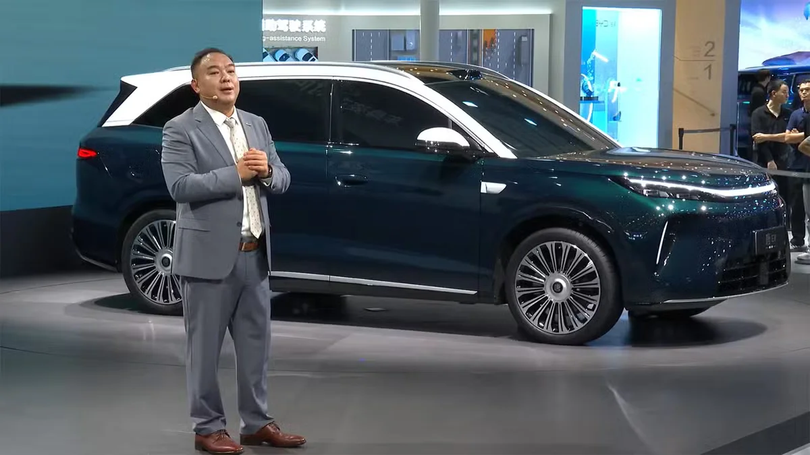
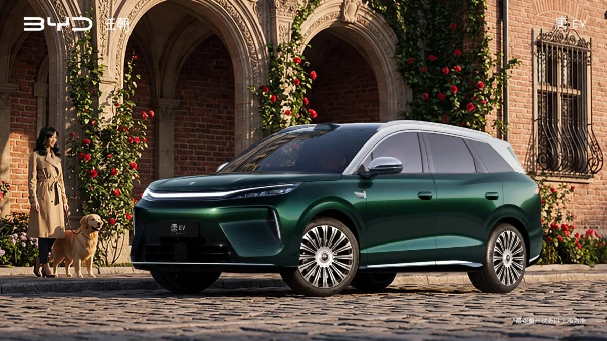
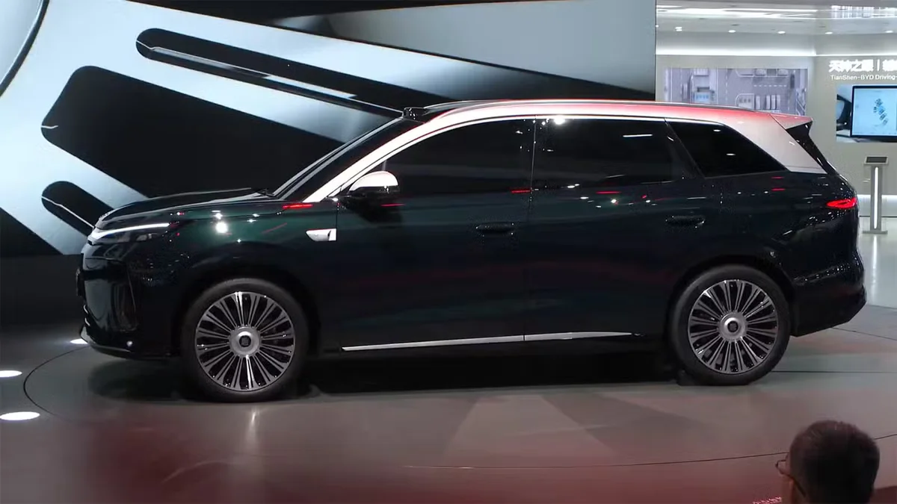
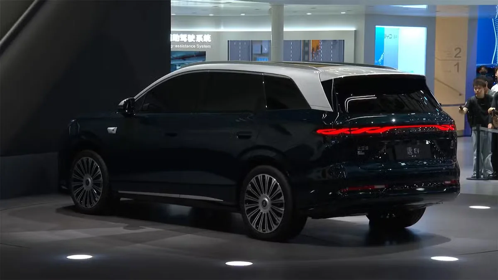
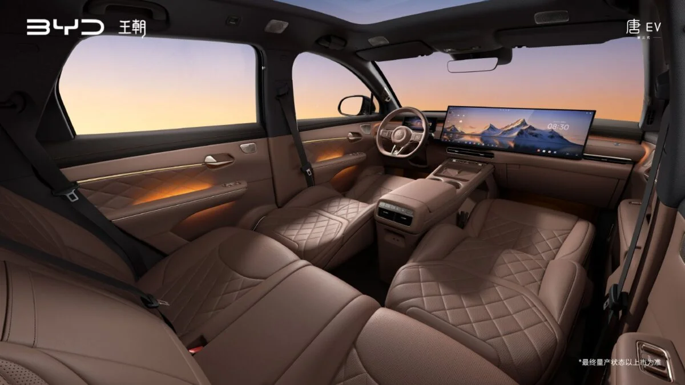
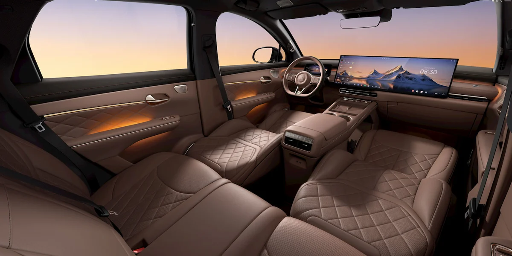
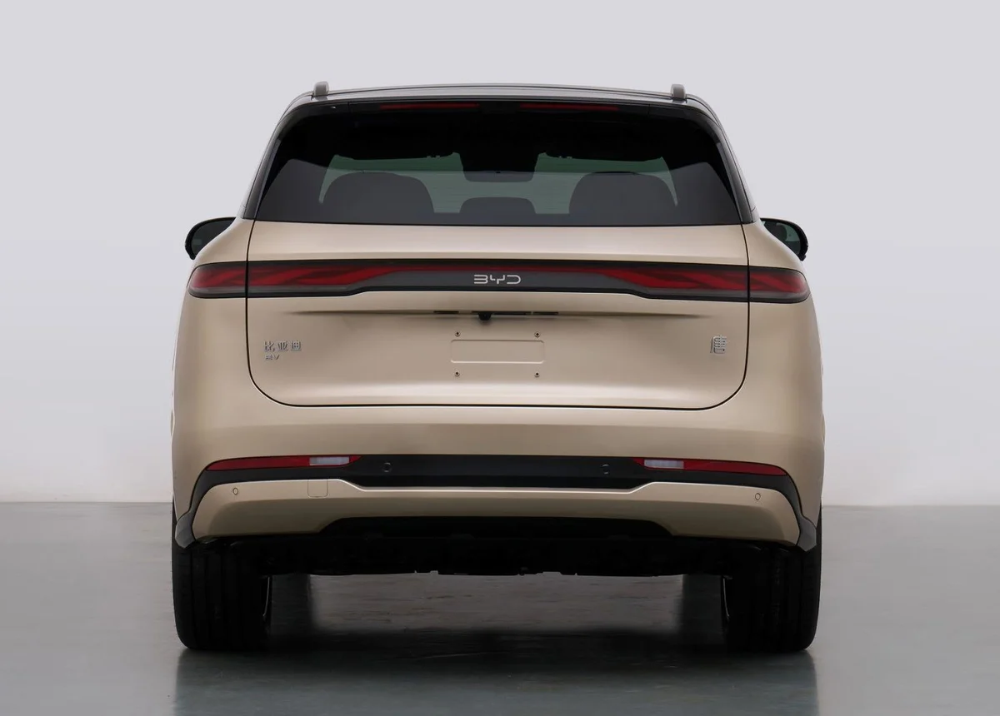

▲ MIIT 신고 목록에 오른 BYD 3세대 탕 EV 전측면 ⓒ 중국 공업정보화부 신고 이미지(CnEVPost·일렉트렉 게재본), 사용자 책임 하 게재
"690마력에 30인치 화면 두 개"라는 BYD의 새 5인승 전기 SUV, 도대체 어떤 차일까? 일렉트렉(Electrek)이 2026년 10월 19일 보도한 이 차는 BYD 왕조(Dynasty) 라인업의 3세대 탕(唐) EV다. 이 글은 일렉트렉·카뉴스차이나(CarNewsChina)·CnEVPost 보도와 BYD 측 공개 내용을 나눠, 어디까지가 확인된 사실이고 어디부터가 보도인지 정리한다.
먼저 제목의 숫자부터 바로잡는다. 일렉트렉 제목은 "듀얼 30인치"지만 BYD 쪽 설명은 35.4인치와 30인치 화면 한 쌍이다. 690마력은 BYD의 출시 발표가 아니라 중국 공업정보화부(MIIT) 신고 목록에 오른 수치라는 보도다. 국내 판매 계획은 어느 자료에도 없었다.
1. 어떤 차인가: 다탕이 아니라 3세대 탕이다
일렉트렉은 이 차를 "BYD 3세대 탕 EV"로 소개하며, 풀사이즈 다탕과 구분되는 5인승 플래그십 SUV라고 밝혔다. 현행 탕이 5인승·6인승을 함께 내는 것과 달리 새 모델은 5인승만 낸다. 8월 21일 청두 모터쇼에서 처음 공개됐고, 공개 전에는 "왕조망 8계열"이라는 이름으로 불렸다고 중국 매체 아이팬이 전했다. CnEVPost는 BYD 왕조 라인업의 "8계열 기술 플래그십"이라고 소개했다.
이름이 헷갈리는 이유는 비슷한 BYD 모델이 여럿이기 때문이다. 카프리즘이 이미 정리한 청두 모터쇼 전시 모델과 같은 차이며, 자세한 전시 현황은 2026 청두 모터쇼 프리뷰에서 다뤘다.

▲ 청두 모터쇼 공개 행사에서 BYD 왕조 부문 루톈 총괄이 3세대 탕 옆에서 소개하는 장면 ⓒ BYD (2026.8.21 청두 모터쇼 공개 행사, CnEVPost 게재본, 사용자 책임 하 게재)
| 항목 | 내용 | 근거 |
|---|---|---|
| 차체 크기 | 전장 5,045 × 전폭 1,980 × 전고 1,740mm(고급 사양 1,760mm 표기도 있음), 휠베이스 2,950mm | MIIT 신고(일렉트렉·카뉴스차이나), 보도마다 전고 표기가 다름 |
| 좌석 | 5인승, 2열 레그룸 1,000mm 이상, 등받이 최대 130도 | BYD 왕조 부문 총괄 루톈(路天) 발표(보도) |
| 서스펜션·보조 | DiSus-A 듀얼 챔버 에어서스펜션, 갓즈아이 B 주행보조 | BYD 공개 내용(보도) |
| 공차중량 | 2,520kg(총중량 2,975kg) | MIIT 신고(카뉴스차이나) |
| 타이어 | 245/45 R21 | MIIT 신고(카뉴스차이나) |

▲ BYD 탕 EV 홍보 이미지. BYD 왕조 로고가 들어간 제조사 공개 이미지다 ⓒ BYD (제조사 공개 이미지, 사용자 책임 하 게재)
기존 탕 시리즈와의 관계는 BYD 아토 8 파리 공개 기사에서 다룬 7인승 탕 L(유럽명 아토 8) 이야기와 이어진다. 탕 L은 7인승이고 이번 차는 5인승이라 같은 차의 연식 변경이 아니다. 6월 출시된 다탕 EV도 7인승(전장 5,263mm, 휠베이스 3,130mm)이라 별개 모델이며, 아이팬은 5인승 탕과 다탕이 "탕 가문"을 이룬다고 설명했다. 이 글 속 515kW 수치는 5인승 탕(신고 코드 BYD6500BBBEV3)의 것이고, 다탕 신고의 215kW/370kW 조합과 혼동하면 안 된다.
2. 690마력의 정체: 515kW, 그리고 MIIT 신고라는 단서
카뉴스차이나가 2026년 10월 17일 보도한 MIIT 신고 목록에는 듀얼 모터 AWD 탕 EV가 합산 최고출력 515kW(691마력), 최고속도 250km/h로 올라 있다. 전륜은 교류 비동기 모터로 최대 215kW(연속 75kW), 후륜은 영구자석 동기 모터로 최대 300kW(연속 150kW)다. 일렉트렉은 이를 반올림해 "690마력"이라고 썼다.
다만 이 목록은 "제안된 등록(proposed listing)"일 뿐 최종 생산 승인이 아니라고 카뉴스차이나는 직접 밝혔다. BYD가 AWD 사양의 출력을 공식 출시 행사에서 확정한 것은 아니다. 청두에서 공개된 후륜구동 사양은 300kW 모터이고, 4륜구동 버전이 있다는 것은 아이팬이 확인했지만 사양은 밝히지 않았다. 중국어 검색 요약에는 215kW가 다탕 신고(215kW/370kW 조합)의 수치로 섞여 나오기도 하는데, 515kW는 공업정보화부 제412차 공고 신고에서 전륜 215kW(AC 비동기)+후륜 300kW(영구자석 동기)로 올라온 5인승 탕 AWD의 합산값이라는 중국 매체 보도(신랑·펑황 등)와 카뉴스차이나 보도가 일치한다.
| 구분 | 후륜구동(RWD) | 사륜구동(AWD) |
|---|---|---|
| 모터 | 후륜 300kW(약 402마력) | 전륜 215kW + 후륜 300kW |
| 합산 최고출력 | 300kW(약 402마력) | 515kW(약 691마력) |
| 최고속도 | 확인하지 못함 | 250km/h(신고 기재) |
| 근거 | 청두 공개 시 보도, MIIT | MIIT 신고 목록(카뉴스차이나) |
▲ MIIT 신고 목록에 오른 3세대 탕 EV 전측면 ⓒ 중국 공업정보화부 신고 이미지(CnEVPost·일렉트렉 게재본), 사용자 책임 하 게재

▲ 청두 모터쇼 전시 차량의 측면. 짙은 녹색 차체와 은색 지붕, 큰 휠이 보인다 ⓒ BYD (2026.8.21 청두 모터쇼 공개 행사, CnEVPost 게재본, 사용자 책임 하 게재)

▲ 청두 모터쇼 전시 차량의 후측면. 가로로 이어진 테일램프가 특징이다 ⓒ BYD (2026.8.21 청두 모터쇼 공개 행사, CnEVPost 게재본, 사용자 책임 하 게재)
참고로 같은 BYD의 다탕 EV는 6월 17일 중국에서 23.99만 위안부터 출시됐고(IT之家 보도), 이번 탕은 가격이 정해지지 않았다. 일렉트렉은 5인승 탕이 다탕보다 저렴한 대안이 될 가능성이 크다고 썼지만 가격 근거는 제시하지 않았다.
3. "듀얼 30인치 화면": 실제 구성은 35.4인치 + 30인치
BYD 왕조 부문 총괄 루톈은 웨이보에서 실내 디자인이 SF 영화 속 우주선 관제 콘솔에서 영감을 얻었다고 밝혔고, 35.4인치 일체형 디스플레이와 30인치 파노라마 화면이 계기판과 HUD를 대신한다고 CnEVPost는 전했다. 일렉트렉 제목의 "듀얼 30인치(two 30" screens)"는 부정확하다. 같은 일렉트렉 본문도 35.4인치와 30인치로 적었고, CnEVPost·아이팬·카뉴스차이나 모두 같은 조합이다. 이 글이 "듀얼 30인치"를 제목에서 인용으로만 쓰는 이유다.
중국 매체 아이팬(ifanr)은 이 구성을 "별 사이 듀얼 스크린"이라 부르며, 기존 BYD가 오랫동안 써 온 회전식 중앙 화면 대신 위쪽 35.4인치 계기 화면과 아래쪽 30인치 이음매 없는 파노라마 화면을 쓴다고 설명했다. 어느 화면이 어느 기능을 맡는지(운전석·동승석 분리 등)는 공개된 자료에서 확인하지 못했다.

▲ 3세대 탕 EV 실내. 운전석부터 동승석까지 이어지는 가로형 화면 ⓒ BYD (제조사 공개 이미지, 사용자 책임 하 게재)
실내 색상은 듄 베이지(Dune Beige)와 앰버 브라운(Amber Brown) 두 가지, 2열은 무중력 캡틴 시트라고 일렉트렉은 전했다.

▲ 2열 쪽에서 본 실내. 갈색 퀼팅 시트가 보이는 구성이다 ⓒ BYD (제조사 공개 이미지, CnEVPost 게재본), 사용자 책임 하 게재
4. 배터리와 충전: 5분 충전은 BYD 충전기 기준
MIIT 신고에는 LFP(리튬인산철) 배터리가 올라 있고, 셀은 우웨이 핀드림스, 팩 조립은 정저우 핀드림스라고 카뉴스차이나는 전했다. 청두 공개 때 BYD가 밝힌 사양으로는 2세대 블레이드 배터리가 들어가고, 88.682kWh·105.792kWh 두 가지 용량에서 CLTC 730km, 830km, 850km가 나온다는 보도가 있다. 일렉트렉은 이 용량 수치가 이번 신고나 발표 자료에 없었다고 적었다.
| 항목 | 내용 | 확인 수준 |
|---|---|---|
| 배터리 종류 | LFP, 2세대 블레이드 배터리 | MIIT 신고·BYD 공개(보도) |
| 용량 | 88.682kWh / 105.792kWh | 중국 매체 보도, 일렉트렉은 발표에 없다고 표기 |
| CLTC 주행거리 | 730km / 830km / 850km | 중국 보도(최대 850km는 CnEVPost도 인용) |
| 플래시 충전 | 10→70% 약 5분, 10→97% 약 9분 | BYD 기존 공개 수치(CnEVPost), 이번 차 전용 발표는 확인 못함 |
BYD 충전 네트워크 이야기는 BYD 초급속 충전소 1만 개 돌파 기사에서 다뤘다. 그 기사 기준으로 10→97% 9분은 2세대 블레이드 배터리 기준 수치이며, 커넥터당 최대 1,500kW를 내는 BYD 전용 충전소를 전제로 한다. 일반 급속충전기에서는 이 시간이 나오지 않는다.
CLTC는 중국 시험 기준이라 한국 환경부 인증과 숫자가 다르게 나온다. 850km를 그대로 국내 주행거리로 읽으면 안 된다.
5. 가격·출시·한국 판매: 확인된 것은 "4분기 중국 출시"뿐
가격은 아직 발표되지 않았고, 중국 출시는 2026년 4분기로 예정돼 있다. 카뉴스차이나는 "올해 안에 출시될 것으로 예상"한다고 썼다. 루톈이 별도의 "비장의 카드"를 따로 발표하겠다고 했다는 중국 매체 보도가 있지만, 그 내용은 알려지지 않았다.
한국 판매 가능성에 대해서는 BYD 공식 발표도, 보도도 찾지 못했다. 이 차는 중국 내수 모델로 소개됐고, 한국 BYD 라인업은 아토 3, 씰, 씨라이언 7, 씨라이언 6 DM-i 등으로 구성돼 있다. 현재 한국 라인업 현황은 BYD코리아 2026 라인업 기사에, 한국 판매가는 BYD코리아 실제 구매가 기사에 정리돼 있다.
확인하려면 BYD 공식 글로벌 사이트에서 신차 발표 자료를 확인할 수 있다. BYD 글로벌 사이트 바로가기

▲ MIIT 신고 목록에 오른 3세대 탕 EV 후면 ⓒ 중국 공업정보화부 신고 이미지(CnEVPost·카뉴스차이나 게재본), 사용자 책임 하 게재
6. 이 글이 확인하지 못한 것
- AWD 515kW의 BYD 공식 확정: MIIT 신고 보도(카뉴스차이나·일렉트렉)만 확인했고, 원문 신고서를 직접 대조하지는 못했다
- 배터리 용량과 AWD 주행거리: 중국 매체 보도만 있고 BYD 공식 자료는 못 찾았다
- 이 차 전용 충전 성능: 5분·9분 수치는 BYD 기존 공개 내용이다
- 가격·정확한 출시일: 미공개
- 한국·유럽 등 수출 계획: 확인하지 못함
7. 요약
"690마력 듀얼 30인치" BYD 5인승 전기 SUV는 3세대 탕 EV이며, 690마력은 MIIT 신고 목록에 오른 AWD 사양 515kW(691마력)를 반올림한 보도 수치다. 화면은 BYD 설명 기준 35.4인치와 30인치 조합이고, 5인승 차체는 5,045mm에 휠베이스 2,950mm다.
2세대 블레이드 배터리와 플래시 충전(10→70% 약 5분)은 BYD 기존 공개 내용이고, CLTC 최대 850km는 중국 시험 기준이다. 가격은 미공개, 중국 출시는 2026년 4분기 예정이며 한국 판매 계획은 어디에서도 확인되지 않았다.